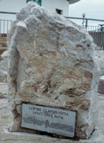
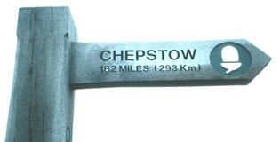

Our final day was unfortunately a very wet one. No pictures till these two at the very end, because my camera stayed packed up. We had to walk through quite a few very muddy plowed up fields, sinking deep with each step. I skidded and fell down twice. We were dripping wet and very muddy by the time we walked down the High Street in Prestatyn. But we were cheered by the sight of a book store. We were finally free to buy books! (Actually, we had bought four or five along the way, ones that we really didn't think we'd ever see anywhere else.) We stuck our heads in the shop to ask when they closed. They were going to close in an hour, and we figured we wouldn't have time to get to the B&B, dry off, and get back in time. The shop people were very kind and said to come on in. So we put our packs in a corner and walked very carefully between bookshelves, and wound up with a stack of wonderful novels and historical novels set in Wales! Just what we wanted!
We then walked down to the official ending place, took pictures of it, found our guest house, and cleaned up and dried off. Dinner at the "Offa's Tavern" pub seemed the appropriate place to finish the walk!
| Previous Day | Home Page |